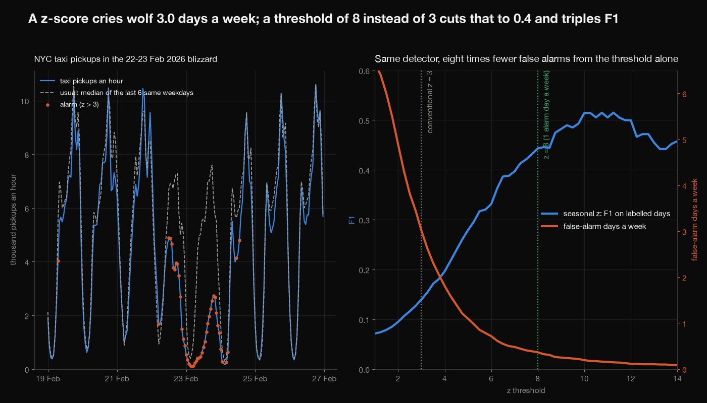
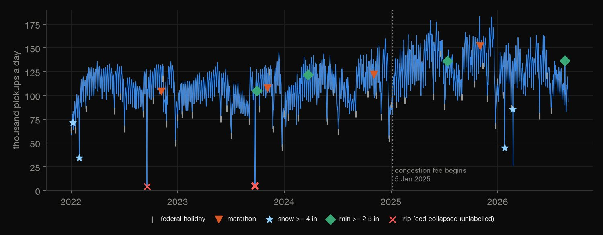
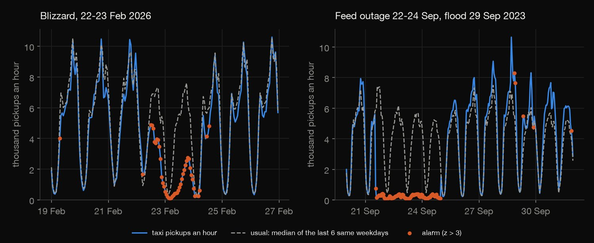
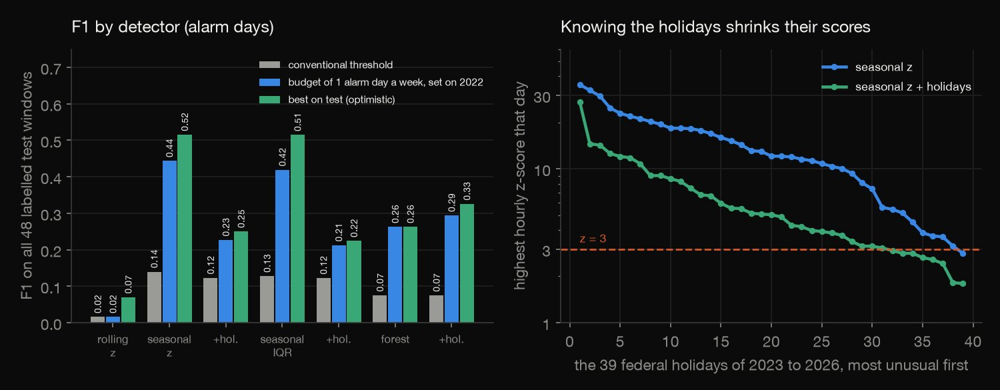
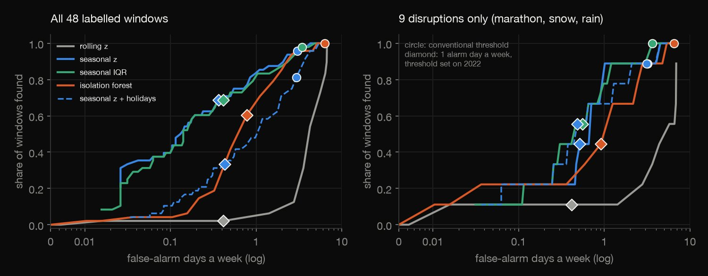
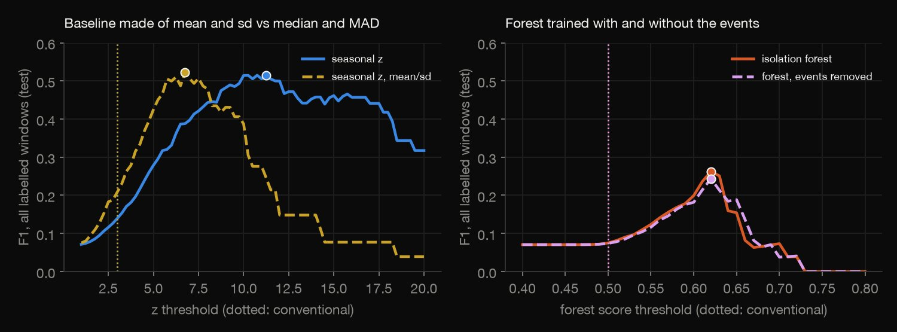

Python · Anomaly detection · 2026-10
Can Simple Detectors Find NYC's Unusual Taxi Days?
On 1,339 test days of NYC taxi pickups, a seasonal z-score at z = 3 finds 96% of 48 labelled days but cries wolf 3.0 days a week (F1 0.14). A threshold set on 2022 (z = 8) cuts that to 0.4 and lifts F1 to 0.44; ignoring the weekly cycle scores 0.02.

Yellow taxis only, whole city as one series. The labels (federal holidays, the marathon, snow of 4 in or more and rain of 2.5 in or more at Central Park) leave out observed holidays, Christmas Eve, outages and the 2025 congestion fee, so true precision is higher than shown; only 9 disruptions fall in the test period. The seasonal baseline is a causal stand-in for STL. Sources: NYC Taxi and Limousine Commission trip records (its page states no licence, only an accuracy disclaimer) and NOAA GHCN-Daily (no licence beyond citation).
01 — The problem
A monitor that cries wolf gets ignored, and one that stays quiet misses the storm. How well do simple detectors find the days when New York's taxi demand is unusual, and how much do the threshold and the calendar matter?
The task follows GeeksforGeeks' "Anomaly Detection in Time Series Data". The data is New York taxi pickups, the series the Numenta Anomaly Benchmark made famous, rebuilt from the city's trip records for 2022 to 2026, with ground truth from public calendars and Central Park weather instead of five hand-picked dates.
02 — What I built
Four detectors, seven versions, scored by event window:
- The series: 198 million trips counted by hour, with the daylight-saving hours repaired and masked and four feed-outage days found.
- The labels: federal holidays, the marathon, snowstorms and very wet days, fixed before any detector ran.
- The detectors: rolling z, seasonal z, IQR fence and isolation forest, each with and without holiday knowledge.
- The scores: precision, recall and F1 by event window, false alarms a week, and a NAB-style timeliness score; thresholds chosen on 2022 only.
- Check:
check.pyrecounts 30,081 numbers in plain Python, with no data or statistics library.
03 — How it was built
- 01
Count pickups by the hour
One Parquet file a month (about 3.3 GB in all, 56 files), read one at a time for the pickup timestamp only, counted by clock hour and deleted; only the hourly counts are kept. Trips stamped outside their file's month (2,974) are dropped.
counts = pc.value_counts(pc.floor_temporal(inside, unit="hour")) - 02
Label the days from public records
Federal holidays by statute, the marathon on the first Sunday of November, and Central Park snowfall of 4 in or more and rain of 2.5 in or more from NOAA, adjacent days merged. The labels were fixed before any detector ran.
snow, _ = ghcnd("SNOW"); rain, _ = ghcnd("PRCP") - 03
Score each hour against its usual self
The usual level of an hour is the median of the same hour on the previous 6 same-weekday days; the residual is scaled by the median absolute deviation of the previous 21 days' residuals at that hour. Everything uses the past only, in log pickups.
m = np.median(W, axis=0); s = 1.4826 * np.median(np.abs(W - m), axis=0); S[d] = np.abs(Rz[d] - m) / np.maximum(s, FLOOR) - 04
Score the detector by event window
An alarm day is a day with an alarm hour. A window is found if any of its days alarms; the first alarm earns a NAB-style sigmoid credit that falls from 0.99 at the window's start to 0 at its end; a missed window costs 1, a false-alarm day 0.11.
raw += 2 / (1 + math.exp(5 * y)) - 1 - 05
Recount it all without the libraries
check.pyre-derives the labels, the daylight-saving repair, every detector except the forest (whose stored scores it checks by properties) and every metric in plain Python: 30,081 numbers to a relative tolerance of 1e-8.q1, q3 = quant(w, 0.25), quant(w, 0.75); S[t] = max(q1 - r, r - q3) / max(q3 - q1, FLOOR)
04 — Results
The data have traps. 198 million trips in 56 monthly files, counted by clock hour. The clock is naive, so each year has a spring-forward hour with no trips (5 such hours) and a fall-back hour with two hours of trips (9,614 against 6,323 a week earlier); all 4 fall-back hours are on marathon day. Both are repaired and masked. On 4 days the trip feed itself collapsed to under 10,000 trips: unlabelled, so every alarm on them counts as false. The labels are 62 windows from public records (39 holidays, 3 marathons, 2 snowstorms and 4 very wet days in the 1,339-day test period; thresholds may be chosen only on 2022).

What an alarm looks like. Each detector compares an hour with what that hour usually is. In the February 2026 blizzard the seasonal z-score's alarms follow the collapse of demand hour by hour; on 22 to 24 September 2023 the trip feed fails and every hour alarms, days before the flood.

The weekly cycle matters most; z against IQR is a tie. F1 over the 48 test windows (an alarm day is a day with an alarm hour; a window is found if any day in it alarms). Usual is z = 3, IQR 1.5, forest 0.5; 1/week is the threshold that gives one alarm day a week on 2022; Best is the optimistic best on the test period. The rolling z, which knows nothing of the cycle, finds 1 of 48 windows at the usual threshold. The holiday versions lose in this view by design: holidays are positives here.
| Detector | Usual | 1/week | Best |
|---|---|---|---|
| Rolling z | 0.02 | 0.02 | 0.07 |
| Seasonal z | 0.14 | 0.44 | 0.52 |
| Seasonal z, hol. | 0.12 | 0.23 | 0.25 |
| IQR | 0.13 | 0.42 | 0.51 |
| IQR, hol. | 0.12 | 0.21 | 0.22 |
| Forest | 0.07 | 0.26 | 0.26 |
| Forest, hol. | 0.07 | 0.29 | 0.33 |
Holidays recur. Without holiday knowledge the seasonal z alarms on 38 of the 39 test holidays (median peak z 12.1); with it, on 31 (median peak 5.0), and its peak is lower on 34 of the 39. Count a holiday alarm as false (view B, only the 9 disruptions are positives) and its F1 at the budget is 0.11 against 0.09: small, on 9 windows, because holidays are only 38 of 615 false-alarm days at z = 3. Veterans Day is the exception: the blind detector barely notices it (median peak z 3.8).

The threshold matters more. The seasonal z at z = 3 alarms on 624 of 1,339 days, 3.0 false-alarm days a week. Raising it to the one-alarm-day-a-week budget gives 0.37 a week, precision 33%, NAB-style timeliness score 59. Choosing the threshold as the best F1 on the nine windows of 2022 is noisy (z = 17.25, and z = 18.5 with F1 0.07 for the holiday version).
| z | False/wk | Found | F1 |
|---|---|---|---|
| 3, usual | 3.02 | 96% | 0.14 |
| 8, 1/week | 0.37 | 69% | 0.44 |
| 17.25, best 2022 | 0.03 | 31% | 0.44 |
| 11.25, best test | 0.15 | 54% | 0.52 |

The disruptions. The table ranks each against the 1,271 unlabelled test days: Peak is the peak z, Above is how many of them have a higher one, and At the hour of its first alarm at z = 3. The snowstorms are easy (4 days above, all of them the September 2023 feed outage); marathons 62 to 163 days above; rain is barely separable (99 to 735), the September 2023 flood included. The rolling z finds only the February 2026 blizzard.
| Event | Peak | Above | At |
|---|---|---|---|
| Flood 29 Sep 23 | 6.0 | 137 | 8 h |
| Marathon 5 Nov 23 | 5.5 | 163 | 2 h |
| Rain 23 Mar 24 | 2.5 | 735 | none |
| Marathon 3 Nov 24 | 8.0 | 69 | 5 h |
| Rain 14 Jul 25 | 6.5 | 104 | 19 h |
| Marathon 2 Nov 25 | 8.3 | 62 | 5 h |
| Snow 25 Jan 26 | 27.0 | 4 | 6 h |
| Snow 22 Feb 26 | 36.5 | 4 | 5 h |
| Rain 20 Aug 26 | 6.7 | 99 | 18 h |
Contamination. Events inflate a mean and standard deviation: at z = 3 the mean/sd baseline gives 1.3 false-alarm days a week and finds 69% of windows, the median/MAD one 3.0 and 96%, yet their best F1 is the same: contamination moves the operating point, not the ceiling. The labelled days are 3.6% of the forest's training hours and removing them does not help it.
| Variant | False/wk | Found | Best F1 |
|---|---|---|---|
| Median, MAD | 3.0 | 96% | 0.52 |
| Mean, sd | 1.3 | 69% | 0.52 |
| Forest | 6.3 | 100% | 0.26 |
| Forest, clean | 6.4 | 100% | 0.24 |

05 — What I'd do next
- Label more: observed holidays, Christmas Eve, concerts, outages, and the congestion fee as a level shift, and see how much of the false-alarm count was real.
- Add the other demand series (Uber and Lyft, the subway) and ask whether an event moves them together, which would make an alarm more believable.
- Try a real STL fit and a change-point method, and measure how far the choice of window lengths moves the scores.